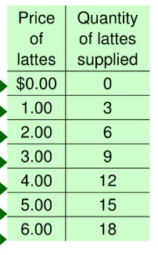

AP - YUNIT II
ARALIN 1: DEMAND
⪼------➢ Demand ✎ᝰ.
↳ Dami ng produkto o serbisyo na gusto at kayang bilhin ng mga mamimili sa isang takdang presyo at panahon o;
↳ Kakayahan at kagustuhan ng tao na bumili ng kanyang pangangailangan
⪼------➢ Ugnayan ng presyo sa demand ng tao ✎ᝰ.
↳ Presyo ang pinakamahalagang nagtatakda (determiant) sa dami ng demand
image credits: Samuel, S. (2020, April 15). The coronavirus likely came from China’s wet markets. They’re reopening anyway. Vox. https://www.vox.com/future-perfect/2020/4/15/21219222/coronavirus-china-ban-wet-markets-reopening
˗ˏˋ Batas ng Demand
↳ Kapag tumaas ang preso, bumababa ang demand ar kayang bilhin.
↳ Kapag bumaba ang presyo, tataas naman ang dami ng gusto at kayang bilhin (Cetris Paribus)
↳ Presyo lang ang nakadepende dito upang gumana ang batas ng demand
˗ˏˋ Ceteris Paribus
↳ Ipinagpapalagay na ang presyo lamang ang salik na nakaaapekto sa pagbabago ng quantity demanded, habang ang ibang salik ay hindi
P ⬆ QD ⬇
QD ⬆ P ⬇
˗ˏˋ Bakit inverse ang presyo at demand?
↳ Substitution effect at income effect
↳ Substitution effect: kapag tumaas ang presyo ng isang bilihin, lilipat ang mga mamimili sa isang mas mura, kapalit na produkto, kung ipagpalagay na ang kanilang kita ay nananatiling pare-pareho
↳ Income effect: Kapag tumaas ang tunay na kita ng mga mamimili, may posibilidad silang bumili ng higit pa sa karamihan ng mga kalakal ( normal goods ) at mas kaunti sa iba
˗ˏˋ Demand Function
↳ Mathematical representation ng ugnayan ng demand at presyo.
↳ Ang presyo at demand sa demand function ay may kabaliktaran na ugnayan
↳ Qd = a-bp, o
↳ Demand = kagustuhan + kakayahan
˗ˏˋ Demand Schedule
↳ Ito ay isang talaan na habang bumababa ang presyo, duamrami ang gustong bilhin ng mga mamimili
↳ Talaan ng ugnayan ng demand at presyo
↳ Upang kumpletuhin, gamitin ang demand function
˗ˏˋ Halimbawa:
Image credits: Pureza, G. M. (2025, February 26). Demand schedule. Definition, Example, Curve, Limitation. https://www.wallstreetmojo.com/demand-schedule/
˗ˏˋ Demand Curve
↳ Ipinapakita ng kurba kung gaano karami ang gustong bilhin ng mamimili base sa iba't-ibang presyo
↳ Grapikong representasyon ng ugnayan ng demand at presyo.
↳ Kapag lumipat ito sa bottom left, ibig sabihin ay bumaba ang demand.
↳ Kapag lumipat ito sa top right, ibig sabihin ay tumaas ang demand.
˗ˏˋ Halimbawa:
Image credits: Ansari, S. (2023, December 13). Supply and demand curves explained. Economics Online. https://www.economicsonline.co.uk/competitive_markets/supply-and-demand-curves-explained.html/
˗ˏˋ MGA SALIK NA MAY EPEKTO SA DEMAND


Image credits: https://www.pinterest.com
ARALIN 2: SUPPLY
⪼------➢ Supply ✎ᝰ.
↳ Ang supply ay ang lahat ng produkto na pinagsama-sama upang ipagbili ng lahat ng produsyer sa isang pamilihan sa iba't-ibang presyo sa nakatalang panahon.
↳ Habang tumataas ang presyo ng isang bagay, tumataas din ang quantity supplied, at vice versa. Ito ay isang pangunahing konsepto ng batas ng supply.
image credits: Vecteezy (vecteezy) - Profile | Pinterest. (2025, July 23). Pinterest. https://ph.pinterest.com/vecteezy/
˗ˏˋ Batas ng Supply
↳ Kapang tumaas ang presyo, tataas din ang supply ng produkto.
↳ Kapag bumaba ang presyo, bababa rin ang supply ng produkto.
↳ Presyo lang ang nakadepende dito upang gumana ang batas ng supply
˗ˏˋ Ceteris Paribus
↳ Ipinagpapalagay na ang presyo lamang ang salik na nakaaapekto sa pagbabago ng quantity supplied, habang ang ibang salik ay hindi
↳ Latin na salita kung saan ang ibig sabihin ay "all other things remain constant".
P ⬆ QS ⬆
QS ⬇ P ⬇
˗ˏˋ Supply Function
↳ Mathematical representation ng ugnayan ng supply at presyo.
↳ Ang presyo at supply sa supply function ay mayroong tuwirang ugnayan.
↳ Qds = a+bp, o
˗ˏˋ Supply Schedule
↳ Ito ay isang talaan na habang tumataas ang presyo, duamrami ang kabuoang supply ng isang produkto
↳ Talaan ng ugnayan ng supply at presyo
↳ Upang kumpletuhin, gamitin ang supply function
˗ˏˋ Halimbawa:
Image credits: Mic5: Supply schedule/curve, Law of supply, Change in quantity supplied - Jeffrey See | Library | Formative. (n.d.). https://app.formative.com/library/5df10a57d6132488c88d69ed
˗ˏˋ Supply Curve
↳ Ipinapakita ng kurba kung gaano karami ang gustong bilhin ng mamimili base sa iba't-ibang presyo
↳ Grapikong representasyon ng ugnayan ng supply at presyo.
↳ Kapag lumipat ito sa kaliwa, ibig sabihin ay bumaba ang supply.
↳ Kapag lumipat ito sa kanan, ibig sabihin ay tumaas ang supply.
˗ˏˋ Halimbawa:
Image credits: Ansari, S. (2023b, December 13). Supply and demand curves explained. Economics Online. https://www.economicsonline.co.uk/competitive_markets/supply-and-demand-curves-explained.html/
˗ˏˋ MGA SALIK NA MAY EPEKTO SA DEMAND


Image credits: https://www.pinterest.com
ARALIN 3: ELASTISIDAD
⪼------➢ Elastisidad ✎ᝰ.
↳ Paraan upang masukat ang pagtugon ng mga mamimili at nagtitinda sa pagbabago ng presyo.
image credits:The_Sun_Com, P. P. (2023, January 3). Where to buy rubber bands online and in-store. Pinterest. https://ph.pinterest.com/pin/4596064281212508672/
Uri ng Elastisidad
˗ˏˋ Elastik
↳ Mas malaki ang pagbabago sa quantity kaysa sa presyo
↳ /E/ >1
↳ Mga produktong maraming kapalit o kahalili (soda)
˗ˏˋ Graph:
˗ˏˋ Di-elastik
↳ Mas malaki ang pagbabago sa presyo kaysa sa pagbabago sa quantity
↳ /E/<1
↳ Mga produktong halos walang kapalit (gamot)
˗ˏˋ Graph:
˗ˏˋ Unitary
↳ /E/=1
↳ Equal na bahagdan ng pagbabago
↳ Walang tiyak na halimbawa
˗ˏˋ Graph:
˗ˏˋ Ganap na elastik
↳ /E/= infinity
↳ Walang pagbabago sa infinite na pagbabago ng quantity
↳ Produktong handang ibenta sa marami (tsokolate)
˗ˏˋ Graph:

˗ˏˋ Ganap na Di-elastik
↳ /E/=0
↳ Hindi nagbabago ang quantity ngunit nagbabago ang presyo
↳ Mga bagay na walang kapalit (insulin)
˗ˏˋ Graph:

˗ˏˋ Formula upang kunin ang Elastisidad:
↳ Ep = percent in change quantity/percent in chance price
↳ % change P = (P2 - P1/ [P1 + P2/2]) x 100
↳ % change Q = (Q2 - Q1/ [Q1 + Q2/2]) x 100
˗ˏˋ Image credits(elastisidad):
↳ Reading: Polar cases of elasticity | Macroeconomics. (n.d.). https://courses.lumenlearning.com/suny-macroeconomics/chapter/reading-polar-cases-of-elasticity/
↳ Reading: Polar cases of elasticity | Macroeconomics. (n.d.-b). https://courses.lumenlearning.com/suny-macroeconomics/chapter/reading-polar-cases-of-elasticity/
↳ Team, W. (2025, March 3). Unitary elastic demand. What Is It, Example, Graph. https://www.wallstreetmojo.com/unitary-elastic-demand/
↳ GeeksforGeeks. (2023, September 12). Types of elasticity of supply. GeeksforGeeks. https://www.geeksforgeeks.org/microeconomics/types-of-elasticity-of-supply/